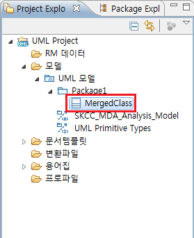

1. 리팩터 (Refactor)
NEXCORE UML Modeler에서 지원하고 있는 리팩터 기능은 키워드의 스테레오 타입 변환, 클래스 병합이 있습니다.
1.1 키워드의 스테레오 타입 변환
키워드의 스테레오 타입 변환은 사용자가 입력한 키워드 정보를 참조하여 해당 UML 요소에 스테레오타입을 입력하는 기능입니다. 실행은 스테레오타입으로 변환하기를 원하는 UML 요소에서 마우스 오른쪽 클릭 후 [리팩터] > [키워드의 스테레오타입 변환] 입니다.

<그림 1. 키워드의 스테레오타입 변환 실행>
키워드의 스테레오타입 변환을 실행한다고 바로 스테레오타입이 적용되지는 않습니다. 스테레오타입 적용을 하기 위해서는 먼저 모델에 프로파일이 적용되어 있어야 합니다. 모델의 프로파일 적용은 [NEXCORE UML Modeler 사용자 가이드]의 [프로파일 및 라이브러리 적용]에 설명되어 있습니다.

<그림 2. 적용 가능한 스테레오타입 예>
위의 [그림 2.]는 클래스에 스테레오타입을 적용하는 다이얼로그 입니다. 일반적으로 UML 요소에 스테레오타입을 적용하기 위해서는 UML 요소를 선택하고, [특성] 창을 열고, [스테레오타입] 탭을 선택, [스테레오타입 적용] 버튼을 선택, 다이얼로그에서 스테레오타입을 선택 하는 일련의 과정들을 거쳐야 합니다. 사용자는 하나의 프로젝트를 수행하며 스테레오타입 적용이 필요한 많은 UML 요소들을 생성하게 되고, 이 요소들에 전부 이러한 과정들을 거쳐 스테레오타입을 적용하는 것은 많은 시간이 소요될 수 있습니다. 그래서 리팩터 기능에서는 적용할 스테레오타입과 같은 이름을 키워드에 입력한 후 일괄적으로 전체 UML 요소에 스테레오타입을 적용할 수 있는 기능을 제공하고 있습니다.

<그림 3. 키워드에 적용할 스테레오타입 이름 입력>
위의 그림과 같이 적용할 스테레오타입의 이름을 키워드에 입력한 후 클래스에서 마우스 오른쪽 클릭을 하여 [키워드의 스테레오타입 변환] 기능을 실행합니다.

<그림 4. 키워드의 스테레오타입 변환 실행>

<그림 5. 스테레오타입 변환 적용 후>
위의 그림과 같이 [키워드의 스테레오타입 변환]이 정상적으로 실행되면 [적용된 스테레오타입] 테이블에 키워드에 입력하였던 스테레오타입 이름이 스테레오타입으로 적용되게 됩니다.
1.2 클래스 병합
[클래스 병합]은 선택한 두 개의 클래스를 하나로 합치는 기능입니다. 두 클래스의 오퍼레이션 및 프로퍼티 정보를 읽어와 클래스 병합을 실행합니다. 실행은 병합할 클래스 두 개를 선택한 후 마우스 오른쪽 클릭 > [리팩터] > [클래스 병합] 입니다.

<그림 6. 클래스 병합 실행>

<그림 7. 클래스 병합 다이얼로그>
클래스 병합 메뉴를 실행하면 위의 [그림 7.]과 같은 다이얼로그가 나타나게 됩니다. 다이얼로그는 위에서부터 아래로 병합한 클래스를 생성할 위치, 병합할 클래스의 이름, 병합에 참조한 두 클래스의 삭제 여부를 정하는 세 부분의 입력 그룹으로 나누어져 있습니다. 정보를 입력한 후에 [OK]버튼을 눌러 병합을 완료합니다.

<그림 8. 병합 완료한 클래스>